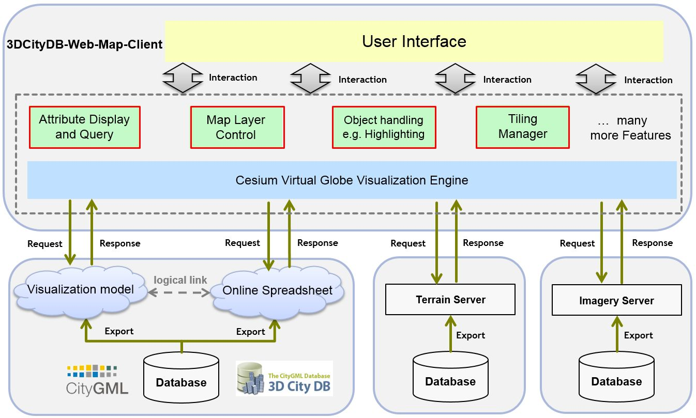

Introduction
The 3DCityDB-Web-Map is a web-based front-end for high-performance 3D visualization and interactive exploration of arbitrarily large semantic 3D city models and other geospatial data. The web client utilizes the Cesium Virtual Globe as its 3D geo-visualization engine based on HTML5 and Web Graphics Library (WebGL) to provide hardware acceleration and cross-platform functionalities like displaying 3D graphic contents on web browsers without the needs of additional plugins.
The key features and functionalities of the 3DCityDB-Web-Map is summarized as follows:
- Add and remove an arbitrary number of data layers at runtime: Cesium 3D Tiles, I3S, and GeoJSON, together with a configurable WMS / WMTS imagery layer and Cesium digital terrain model
- Link visualization layers with external thematic data sources — Google Sheets, PostgreSQL / PostgREST, or OGC Feature API — and query attributes per 3D object
- Display embedded thematic attributes that ship inside the visualization datasets
- Rich interaction: hover highlight, click select, CTRL+click multi-select, hide / show, and fly-to-layer
- Explore 3D objects via third-party mapping services — Google StreetView, Bing Maps oblique view, OpenStreetMap, and DualMaps
- Toggle scene shadows and terrain shadows on the fly
- Collaborative workspace sharing via scene links that encode the camera perspective, shadows, layers, imagery / terrain and splash settings
- Support for mobile devices (smartphones, tablets) with live tracking of geolocation and orientation
Architecture

License
The 3DCityDB-Web-Map is licensed under the Apache License, Version 2.0. See the LICENSE file for more details.
Latest release
The current version is v3.0 (POC) — a Vue 3 / Vite / TypeScript rewrite. For the previous stable line, see v2.0.0; all releases are listed on the GitHub releases page.
System requirements
The hardware on which the 3DCityDB-Web-Map will be run must have a graphics card installed that supports WebGL. In addition, the web browser in use must also provide appropriate WebGL support.
You can visit the WebGL website to check whether your web browser supports WebGL.
The 3DCityDB-Web-Map has been successfully tested on (but is not limited to) the following web browsers under different desktop operating systems like Microsoft Windows, Linux, Apple Mac OS X, and even on mobile operating systems like Android and iOS.
- Apple Safari
- Mozilla Firefox
- Google Chrome
- Opera
For best performance, it is recommended to use Google Chrome.
Documentation
A complete and comprehensive documentation on the 3DCityDB-Web-Map is installed with the 3DCityDB Importer/Exporter and is also available online.
Contributing
The source codes of this project are available on GitHub. All releases can be found here.
The platform GitHub is also used for collaborating:
- To report bugs found in the software, please create a GitHub issue.
- To contribute code for fixing issues, please create a pull request with the issue id.
- To propose a new feature, please also create a GitHub issue and open a discussion.
Developers
v3 (current) — Vue 3 / Vite / TypeScript rewrite:
-
Zhihang Yao
Hochschule für Technik Stuttgart (HFT Stuttgart)
v2 and earlier — original 3DCityDB-Web-Map:
-
Son H. Nguyen, Kanishk Chaturvedi, and Thomas H. Kolbe
Chair of Geoinformatics, Technical University of Munich
-
Zhihang Yao, Jannes Bolling, Lucas van Walstijn, and Claus Nagel
Virtual City Systems, Berlin
More information
The 3DCityDB-Web-Map is a part of the 3DCityDB Software Suite for managing and working with large semantic 3D city models in CityGML. However, the web client can also be used as a separate stand-alone component.
OGC CityGML is an open data model and XML-based format for the storage and exchange of semantic 3D city models. It is an application schema for the Geography Markup Language version 3 (GML3), the extendible international standard for spatial data exchange issued by the Open Geospatial Consortium (OGC) and the ISO TC211. The aim of the development of CityGML is to reach a common definition of the basic entities, attributes, and relations of a 3D city model. CityGML is an international OGC standard and can be used free of charge.